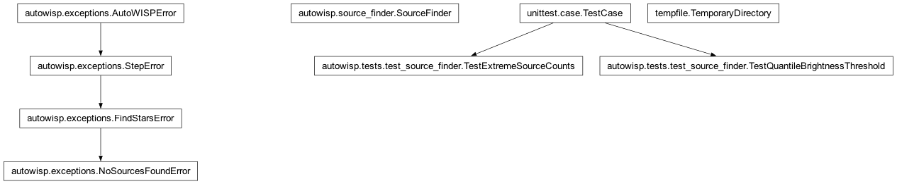

autowisp.tests.test_source_finder module
Class Inheritance Diagram

Exercise the quantile-based brightness-threshold path in SourceFinder.
When brightness_threshold is left unset, SourceFinder derives it from an
image quantile (brightness_quantile_scale * numpy.quantile(...)), producing
a numpy.float64. Under numpy 2, repr(numpy.float64(x)) is
'np.float64(x)' – which fistar rejects with “invalid command line
argument” – so start_fistar coerces to a plain float before repr.
The find_stars integration test only ever uses a fixed (Python-float) threshold
from test.cfg, so this quantile path – where the numpy.float64
originates and reaches the command line – was never exercised. This drives it
end to end with the real fistar (an astrowisp dependency) and checks that the
extraction actually succeeds.
- class autowisp.tests.test_source_finder.TestExtremeSourceCounts(methodName='runTest')[source]
Bases:
TestCaseFrames with one source or none must not crash the extractor.
numpy.genfromtxtis what makes these two special: a single extracted source comes back as a 0-d array (indexing it with the finite-value mask raisedIndexError), and no sources at all come back as a 1-d array whose dtype has no field names (sort(order= "flux")then raisedValueError: unknown field name).
- class autowisp.tests.test_source_finder.TestQuantileBrightnessThreshold(methodName='runTest')[source]
Bases:
TestCaseThe image-quantile threshold must drive a successful fistar run.
- test_quantile_threshold_extraction_succeeds()[source]
Derive the threshold from the image quantile and run fistar for real.
With
brightness_thresholdunset,SourceFindercomputes it as anumpy.float64from the image and hands it to fistar. A malformed value (the pre-fix numpy repr) makes fistar exit with “invalid command line argument” and extract nothing, so a non-empty result confirms the threshold reached the CLI in a parseable form.
- autowisp.tests.test_source_finder._make_test_frame(fits_path, source_positions=None)[source]
Write a 3-HDU FITS (image, placeholder, saturation mask) with 5 sources.
Three HDUs because
SourceFinderreads the image from HDU 0 and the saturation mask from HDU 2. The five bright Gaussians sit well above the 0.999 image quantile so fistar has clear sources to extract.